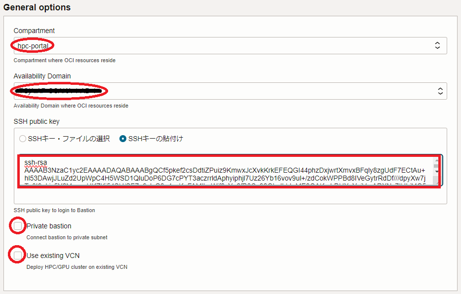
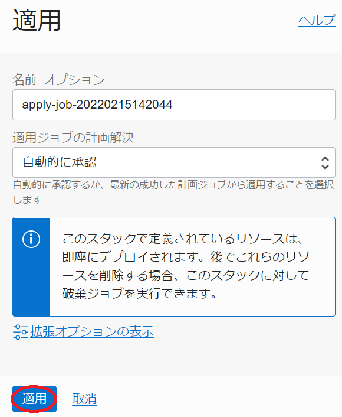

このチュートリアルは、HPCクラスタの計算ノードに最適なベアメタルインスタンス（本チュートリアルでは BM.Optimized3.36 を使用）を クラスタ・ネットワーク でノード間接続する、HPCワークロードを実行するためのHPCクラスタを構築する際のベースとなるインフラストラクチャを、予め用意された Terraform スクリプトを活用して自動構築し、そのインターコネクト性能を検証します。
この自動構築は、 Terraform スクリプトを リソース・マネージャ に読み込ませて作成する スタック を使用する方法と、 Terraform 実行環境を用意して Terraform CLIを使用する方法から選択することが出来ます。
このチュートリアルで作成する環境は、ユーザ管理、ホスト名管理、共有ファイルシステム、プログラム開発環境、ジョブスケジューラ等、必要なソフトウェア環境をこの上に整備し、ご自身の要件に沿ったHPCクラスタを構築する際の基礎インフラストラクチャとして利用することが可能です。
なお、これらのクラスタ管理に必要なソフトウェアの導入までを自動化する HPCクラスタスタック も利用可能で、詳細は OCI HPCチュートリアル集 の HPCクラスタを構築する(スタティッククラスタ自動構築編) を参照ください。

本チュートリアルで作成するHPCクラスタ構築用の Terraform スクリプトは、そのひな型が GitHub のパブリックレポジトリから公開されており、適用すると以下の処理を行います。
- VCNと関連するネットワークリソース構築
- Bastionノード構築
- 計算ノード用 インスタンス構成 作成
- クラスタ・ネットワーク と計算ノード構築
- HPCクラスタ内のノード間SSHアクセスに使用するSSH鍵ペア作成・配布
- 計算ノードの全ホスト名を記載したホストリストファイル（/home/opc/hostlist.txt）作成
- 構築したBastionノード・計算ノードのホスト名・IPアドレス出力
Bastionノード構築は、 cloud-init 設定ファイル( cloud-config )を含み、 cloud-init がBastionノードデプロイ時に以下の処理を行います。
- タイムゾーンをJSTに変更
- ホームディレクトリ領域のNFSエクスポート
- 計算ノードのDNS名前解決をショートホスト名で行うための resolv.conf 修正
また計算ノード用 インスタンス構成 は、 cloud-config を含み、 cloud-init が計算ノードデプロイ時に以下の処理を行います。
- タイムゾーンをJSTに変更
- NVMe SSDローカルディスク領域ファイルシステム作成
- firewalld 停止
- ルートファイルシステム拡張
- クラスタ・ネットワーク 接続用ネットワークインターフェース作成
- BastionノードのDNS名前解決をショートホスト名で行うための resolv.conf 修正
- Bastionノードホームディレクトリ領域のNFSマウント
所要時間 : 約1時間
前提条件 : HPCクラスタを収容するコンパートメント(ルート・コンパートメントでもOKです)の作成と、このコンパートメントに対する必要なリソース管理権限がユーザーに付与されていること。
注意 : 本コンテンツ内の画面ショットは、現在のOCIコンソール画面と異なっている場合があります。
0. 事前準備
0-0. 概要
本章は、HPCクラスタを構築する際事前に用意しておく必要のあるリソースを作成します。
この手順は、構築手法に リソース・マネージャ を使用する方法を採用するか、 Terraform CLIを使用する方法を採用するかで異なります。
[ リソース・マネージャ を使用する方法]
- 構成ソース・プロバイダ 作成
- スタック 作成
[ Terraform CLIを使用する方法]
- Terraform 実行環境構築
- Terraform スクリプト作成
以降では、2つの異なる構築手法毎にその手順を解説します。
0-1. リソース・マネージャを使用する方法
0-1-1. 構成ソース・プロバイダ作成
本章は、ひな型となる Terraform スクリプトを GitHub パブリックレポジトリから取り込むための 構成ソース・プロバイダ を作成します。
構成ソース・プロバイダ の作成は、 ここ を参照ください。
0-1-2. スタック作成
本章は、HPCクラスタを構築するための リソース・マネージャ 用 スタック を作成します。
-
OCIコンソールにログインし、HPCクラスタをデプロイするリージョンを選択後、 開発者サービス → リソース・マネージャ → スタック とメニューを辿ります。
-
表示される以下画面で、スタックの作成 ボタンをクリックします。

- 表示される以下 スタック情報 画面で、以下の情報を入力し、下部の 次 ボタンをクリックします。
- Terraformの構成のオリジン : ソース・コード制御システム
- ソースコード管理タイプ : GitHub
- 構成ソース・プロバイダ : 先に作成した 構成ソース・プロバイダ
- リポジトリ : tutorial_cn
- ブランチ : master
- 名前 : スタックに付与する名前（任意）
- 説明 : スタックに付与する説明（任意）

- 表示される 変数の構成 画面で、各画面フィールドに以下の情報を入力し、下部の 次 ボタンをクリックします。
4.1 General options フィールド- Compartment : HPCクラスタをデプロイする コンパートメント
- Availability Domain : HPCクラスタをデプロイする 可用性ドメイン
- SSH public key : Bastionノードにログインする際使用するSSH秘密鍵に対応する公開鍵
（公開鍵ファイルのアップロード（ SSHキー・ファイルの選択 ）と公開鍵のフィールドへの貼り付け（ SSHキーの貼付け ）が選択可能）

4.2 Compute/GPU node options フィールド- Display name postfix : 計算ノードホスト名の接尾辞（*1）
- Shape : BM.Optimized3.36
- Node count : 計算ノードのノード数（デフォルト：2）
- Image OCID : 計算ノードのイメージOCID（*2）
- Boot volume size : 計算ノードのブートボリュームサイズ(GB)
- cloud-config : 計算ノードの cloud-init 設定ファイル( cloud-config )（*3）
- NPS for BM.Optimized3.36 : 計算ノードの NPS 設定値 (デフォルト：NPS1) （*4）
- SMT : 計算ノードの SMT 設定値 (デフォルト：有効) （*4）

*1） 例えば x9-ol88 と指定した場合、計算ノードのホスト名は inst-xxxxx-x9-ol88 となります。（ xxxxx はランダムな文字列）
*2）以下のOCIDを指定します。Oracle Linux
バージョンOCID 7.9 ocid1.image.oc1..aaaaaaaalq4xqgkvjkrvvcvsfmfkbljgt6hfdqymyt6gpekuf622a6xktbcq 8.8 ocid1.image.oc1..aaaaaaaajkzfwcucvqdui7rksrvgcaagoxutbh56pecbff7qz7gbfpruhzja *3）以下をテキストファイルとして保存し、ブラウザから読み込みます。
#cloud-config timezone: Asia/Tokyo runcmd: # # Mount NVMe local storage - parted -s /dev/nvme0n1 mklabel gpt - parted -s /dev/nvme0n1 -- mkpart primary xfs 1 -1 - mkfs.xfs -L localscratch /dev/nvme0n1p1 - mkdir -p /mnt/localdisk - echo "LABEL=localscratch /mnt/localdisk/ xfs defaults,noatime 0 0" >> /etc/fstab - mount /mnt/localdisk # # Stop firewalld - systemctl disable --now firewalld # # Expand root file system to those set by instance configuration - /usr/libexec/oci-growfs -y # # Add public subnet to DNS search - sed -i '/^search/s/$/ public.vcn.oraclevcn.com/g' /etc/resolv.conf - chattr -R +i /etc/resolv.conf # # NFS mount setting - echo "bastion:/home /home nfs defaults,vers=3 0 0" >> /etc/fstab - mount /home*4）詳細は、 OCI HPCパフォーマンス関連情報 の パフォーマンスに関連するベア・メタル・インスタンスのBIOS設定方法 を参照ください。
-
表示される 確認 画面で、これまでの設定項目が意図したものになっているかを確認し、以下 作成されたスタックで適用を実行しますか。 フィールドの 適用の実行 をチェックオフし、下部の 作成 ボタンをクリックします。

ここで 適用の実行 をチェックした場合、 作成 ボタンのクリックと同時に スタック の適用が開始され、HPCクラスタの構築が始まりますが、このチュートリアルでは後の章で改めて スタック の適用を行います。
これで、以下画面のとおりHPCクラスタ構築用 スタック が作成されました。

0-2. Terraform CLIを使用する方法
0-2-1. Terraform実行環境構築
本章は、 Terraform CLIを使用してHPCクラスタのライフサイクル管理を実行する Terraform 実行環境を構築します。
この実行環境は、インターネットに接続された Linux ・ Windows ・ Mac の何れかのOSが稼働している端末であればよく、以下のような選択肢が考えられます。
- OCI上の Linux が稼働するVMインスタンス
- ご自身が使用する Windows / Mac パソコン
- ご自身が使用する Windows / Mac パソコンで動作する Linux ゲストOS
本チュートリアルは、この Terraform 実行環境のOSに Oracle Linux 8を使用します。
Terraform 実行環境は、以下のステップを経て構築します。
- Terraform インストール
- Terraform 実行環境とOCI間の認証関係締結（APIキー登録）
具体的な Terraform 実行環境構築手順は、チュートリアル TerraformでOCIの構築を自動化する の 2. Terraform環境の構築 を参照ください。
また、関連するOCI公式ドキュメントは、 ここ を参照ください。
0-2-2. Terraformスクリプト概要
本チュートリアルで使用するHPCクラスタ構築用の Terraform スクリプトは、そのひな型を GitHub のパブリックレポジトリで公開しており、以下のファイル群で構成されています。
| ファイル名 | 用途 |
|---|---|
| cn.tf | インスタンス構成 と クラスタ・ネットワーク の定義 |
| outputs.tf | 構築したリソース情報の出力 |
| terraform.tfvars | Terraform スクリプト内で使用する変数値の定義 |
| variables.tf | Terraform スクリプト内で使用する変数の型の定義 |
| instance.tf | Bastionノードの定義 |
| provider.tf | テナンシ ・ユーザ・ リージョン の定義 |
| vcn.tf | 仮想クラウド・ネットワーク と関連するネットワークリソースの定義 |
これらのうち自身の環境に合わせて修正する箇所は、基本的に terraform.tfvars と provider.tf に集約しています。
また、これらのファイルと同じディレクトリに user_data ディレクトリが存在し、 cloud-init 設定ファイル（ cloud-config ）を格納しています。
この cloud-config を修正することで、構築するHPCクラスタのOSレベルのカスタマイズをご自身の環境に合わせて追加・変更することも可能でます。
0-2-3. Terraformスクリプト作成
-
Terraform スクリプトの作成は、まず以下の GitHub レポジトリからひな型となる Terraform スクリプトを Terraform 実行環境にダウンロードしますが、
https://github.com/fwiw6430/tutorial_cn
これには、以下コマンドを Terraform 実行環境のopcユーザで実行するか、
$ sudo dnf install -y git $ git clone https://github.com/fwiw6430/tutorial_cnGitHub の Terraform スクリプトレポジトリのページからzipファイルを Terraform 実行環境にダウンロード・展開することで行います。
-
ダウンロードした Terraform スクリプトのうち、 terraform.tfvars と provider.tf 内の以下 Terraform 変数を自身の環境に合わせて修正します。
この際、ひな型ファイル内のこれら Terraform 変数は、予めコメント（ # で始まる行）として埋め込まれているため、このコメント行を有効化して修正します。特に provider.tf のひな型はファイルは、全行がコメントとなっているため、これらを全て有効化した上で、 Terraform変数を設定します。[ provider.tf ]
変数名 設定値 確認方法 tenancy_ocid 使用する テナンシ のOCID ここ を参照 user_ocid 使用するユーザのOCID ここ を参照 private_key_path OCIに登録したAPIキーの秘密キーのパス - fingerprint OCIに登録したAPIキーのフィンガープリント ここ を参照 region HPCクラスタをデプロイする リージョン 識別子 ここ を参照 [ terraform.tfvars ]
変数名 設定値 確認方法 sc_compartment_ocid HPCクラスタをデプロイする コンパートメント のOCID ここ を参照 sc_ad HPCクラスタをデプロイする 可用性ドメイン 識別子 （*5） sc_ssh_key Bastionノードログインに使用するSSH秘密鍵に対する公開鍵 - sc_cn_display_name 計算ノードホスト名の接尾辞 （*6） sc_cn_shape 計算ノードに使用するシェイプ
・ BM.Optimized3.36- sc_cn_node_count 計算ノードのノード数 - sc_cn_image 計算ノードに使用するOSイメージのOCID （*7） sc_cn_boot_vol_size ブートボリューム のサイズ（GB） - sc_cn_cloud_config user_data ディレクトリに格納する計算ノード用 cloud-config ファイル名
・ cloud-init_cnhpc.cfg- sc_cn_nps_x9 計算ノードの NPS BIOS設定値 （*8） sc_cn_smt 計算ノードの SMT BIOS設定値 （*8） *5）OCIコンソールメニューから コンピュート → インスタンス を選択し インスタンスの作成 ボタンをクリックし、表示される以下 配置 フィールドで確認出来ます。

*6）例えば x9-ol88 と指定した場合、計算ノードのホスト名は inst-xxxxx-x9-ol88 となります。（ xxxxx はランダムな文字列）
*7）コメントとして埋め込まれているOSイメージOCIDから、コメント文の記載を参考に適切なOSイメージOCIDのコメントを外して使用します。
*8）詳細は、 OCI HPCパフォーマンス関連情報 の パフォーマンスに関連するベア・メタル・インスタンスのBIOS設定方法 を参照ください。 -
ダウンロードした Terraform スクリプトのうち、 cn.tf を以下のように修正します。
$ diff cn.tf_org cn.tf 13,14c13,14 < # user_data = "${base64encode(file("./user_data/${var.sc_cn_cloud_config}"))}" < user_data = var.sc_cn_cloud_config --- > user_data = "${base64encode(file("./user_data/${var.sc_cn_cloud_config}"))}" > # user_data = var.sc_cn_cloud_config $
1. HPCクラスタ構築
1-0. 概要
本章は、先に作成した スタック / Terraform スクリプトを使用し、HPCクラスタを構築します。
この手順は、構築手法に リソース・マネージャ を使用する方法を採用するか、 Terraform CLIを使用する方法を採用するかで異なり、以降では2つの異なる構築手法毎にその手順を解説します。
1-1. リソース・マネージャを使用する方法
-
以下 スタックの詳細 画面で、 適用 ボタンをクリックします。
-
表示される以下 適用 サイドバーで、 適用 ボタンをクリックします。

-
表示される以下 ジョブ詳細 ウィンドウで、左上のステータスが 受入れ済 → 進行中 と遷移すれば、 スタック の適用が実施されています。

表示される以下 ログ フィールドで、リソースのデプロイ状況を確認します。

この適用が完了するまでの所要時間は、計算ノードのノード数が2ノードの場合で5分程度です。
ステータスが 成功 となれば、HPCクラスタのデプロイが完了しており、以下のように ログ フィールドの最後にBastionノードと計算ノードのホスト名とIPアドレスが出力されます。
Outputs: Bastion_instances_created = { "display_name" = "bastion" "private_ip" = "10.0.1.138" "public_ip" = "123.456.789.123" } Compute_in_cn_created = { "inst-9fhuq-x9-ol8" = { "display_name" = "inst-9fhuq-x9-ol8" "private_ip" = "10.0.2.10" } "inst-dz99s-x9-ol8" = { "display_name" = "inst-dz99s-x9-ol8" "private_ip" = "10.0.2.73" } }
1-2. Terraform CLIを使用する方法
Terraform 実行環境で、以下コマンドを実行します。
$ cd tutorial_cn
$ terraform init
$ terraform apply --auto-approve
最後のコマンドによる Terraform スクリプトの適用完了までの所要時間は、計算ノードのノード数が2ノードの場合で5分程度です。
Terraform スクリプトの適用が正常に完了すると、以下のようにコマンド出力の最後にBastionノードと計算ノードのホスト名とIPアドレスが出力されます。
Apply complete! Resources: 16 added, 0 changed, 0 destroyed.
Outputs:
Bastion_instances_created = {
"display_name" = "bastion"
"private_ip" = "10.0.1.138"
"public_ip" = "123.456.789.123"
}
Compute_in_cn_created = {
"inst-9fhuq-x9-ol8" = {
"display_name" = "inst-9fhuq-x9-ol8"
"private_ip" = "10.0.2.10"
}
"inst-dz99s-x9-ol8" = {
"display_name" = "inst-dz99s-x9-ol8"
"private_ip" = "10.0.2.73"
}
}
2. HPCクラスタ確認
2-0. 概要
本章は、デプロイされたHPCクラスタ環境を確認します。
この際、作成された計算ノードの全ホスト名を記載したホストリストファイルを使用し、BastionノードからHPCクラスタ内の全計算ノードにSSHでコマンドを発行、その環境を確認します。
なおこのホストリストファイルは、Bastionノードと全計算ノードに /home/opc/hostlist.txt として存在します。
2-1. Bastionノードログイン
Bastionノードは、HPCクラスタ構築完了時に表示されるパブリックIPアドレスに対し、指定したSSH公開鍵に対応する秘密鍵を使用し、以下コマンドでインターネット経由ログインします。
$ ssh -i path_to_ssh_secret_key opc@123.456.789.123
2-2. cloud-init完了確認
cloud-init は、計算ノードが起動してSSHログインできる状態であっても、その処理が継続している可能性があるため、以下コマンドをBastionノードのopcユーザで実行し、そのステータスが done となっていることで cloud-init の処理完了を確認します。
この際、ノード数分の接続するかどうかの確認に対して全て yes を入力します。
$ for hname in `cat /home/opc/hostlist.txt`; do echo $hname; ssh $hname "sudo cloud-init status"; done
inst-zvc5c-x9-ol8
The authenticity of host 'inst-zvc5c-x9-ol8 (10.0.2.159)' cannot be established.
ECDSA key fingerprint is SHA256:6zl4kIFKqpBrRlw/JCfStS05rdCu7Eif/4e3OWvbOsc.
Are you sure you want to continue connecting (yes/no/[fingerprint])? yes
Warning: Permanently added 'inst-zvc5c-x9-ol8,10.0.2.159' (ECDSA) to the list of known hosts.
status: done
inst-wf3wx-x9-ol8
The authenticity of host 'inst-wf3wx-x9-ol8 (10.0.2.31)' cannot be established.
ECDSA key fingerprint is SHA256:jWTGqZjG0dAyrbP04JGC8jJX+uqDwMFotLXirA7L+AA.
Are you sure you want to continue connecting (yes/no/[fingerprint])? yes
Warning: Permanently added 'inst-wf3wx-x9-ol8,10.0.2.31' (ECDSA) to the list of known hosts.
status: done
$
ステータスが running の場合は、 cloud-init の処理が継続中のため、処理が完了するまで待ちます。
2-3. 計算ノードファイルシステム確認
計算ノードは、以下のようにルートファイルシステムがデフォルトの50 GBから指定したサイズに拡張され、NVMe SSDローカルディスクが /mnt/localdisk にマウントされ、Bastionノードの /home が /home としてマウントされています。
$ for hname in `cat /home/opc/hostlist.txt`; do echo $hname; ssh $hname "df -h / /mnt/localdisk /home"; done
inst-kicav-x9-ol8
Filesystem Size Used Avail Use% Mounted on
/dev/mapper/ocivolume-root 89G 15G 74G 17% /
/dev/nvme0n1p1 3.5T 25G 3.5T 1% /mnt/localdisk
bastion:/home 36G 8.5G 28G 24% /home
inst-0vdz8-x9-ol8
Filesystem Size Used Avail Use% Mounted on
/dev/mapper/ocivolume-root 89G 15G 74G 17% /
/dev/nvme0n1p1 3.5T 25G 3.5T 1% /mnt/localdisk
bastion:/home 36G 8.5G 28G 24% /home
$
2-4. 計算ノードBIOS設定確認
以下コマンドをBastionノードのopcユーザで実行し、計算ノードのBIOSで指定した NPS と SMT 設定が指定したとおりになっていることを確認します。
$ for hname in `cat /home/opc/hostlist.txt`; do echo $hname; ssh $hname "lscpu | grep -i -e numa -e thread"; done
inst-e0tw0-x9-ol87
Thread(s) per core: 2
NUMA node(s): 2
NUMA node0 CPU(s): 0-17,36-53
NUMA node1 CPU(s): 18-35,54-71
inst-uyopv-x9-ol87
Thread(s) per core: 2
NUMA node(s): 2
NUMA node0 CPU(s): 0-17,36-53
NUMA node1 CPU(s): 18-35,54-71
$
3. MPIプログラム実行
本章は、計算ノードの HPCクラスタネットワーキングイメージ に含まれる OpenMPI と Intel MPI Benchmark を使用し、 クラスタ・ネットワーク のノード間インターコネクト性能を確認します。
ここでは、 Intel MPI Benchmark のPing-Pongを実行します。
OCI HPCパフォーマンス関連情報 の Intel MPI Benchmark実行方法 の OpenMPIでIntel MPI Benchmarkを実行する場合 の手順に従い、2ノードを使用するPing-Pongを実行します。
4. HPCクラスタ削除
4-0. 概要
本章は、先に作成した スタック / Terraform スクリプトを使用し、HPCクラスタを削除します。
この手順は、構築手法に リソース・マネージャ を使用する方法を採用するか、 Terraform CLIを使用する方法を採用するかで異なり、以降では2つの異なる構築手法毎にその手順を解説します。
4-1. リソース・マネージャを使用する方法
-
以下 スタックの詳細 画面で、 破棄 ボタンをクリックします。

-
表示される以下 破棄 サイドバーで、 破棄 ボタンをクリックします。

-
表示される以下 ジョブ詳細 ウィンドウで、左上のステータスが 受入れ済 → 進行中 と遷移すれば、 スタック の破棄が実施されています。

表示される以下 ログ フィールドで、リソースの削除状況を確認します。
この破棄が完了するまでの所要時間は、計算ノードのノード数が2ノードの場合で3分程度です。
ステータスが 成功 となれば、HPCクラスタの削除が完了しています。
4-2. Terraform CLIの場合
本章は、 Terraform スクリプトを Terraform CLIで破棄し、HPCクラスタを削除します。
Terraform 実行環境の tutorial_cn ディレクトリで以下コマンドを実行し、削除が正常に完了したことをメッセージから確認します。
$ terraform destroy --auto-approve
:
Destroy complete! Resources: 18 destroyed.
$
この破棄が完了するまでの所要時間は、計算ノードのノード数が2ノードの場合で3分程度です。
これで、このチュートリアルは終了です。